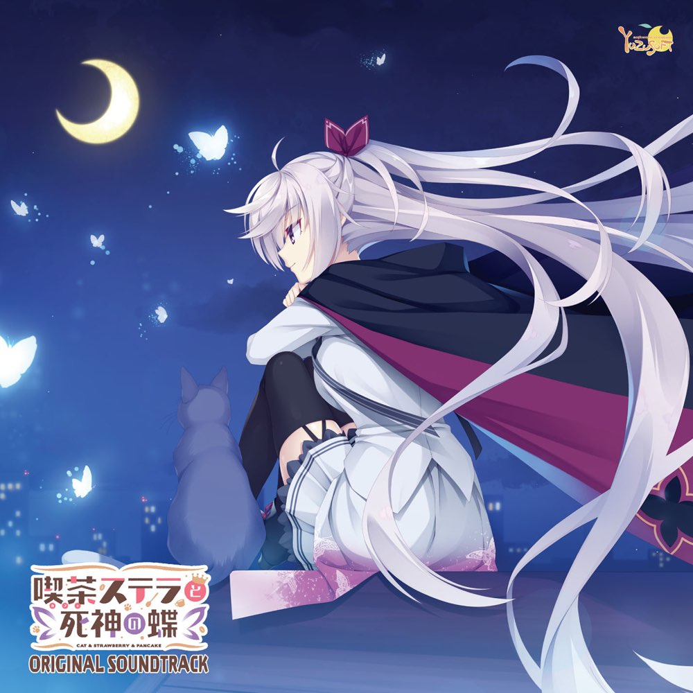
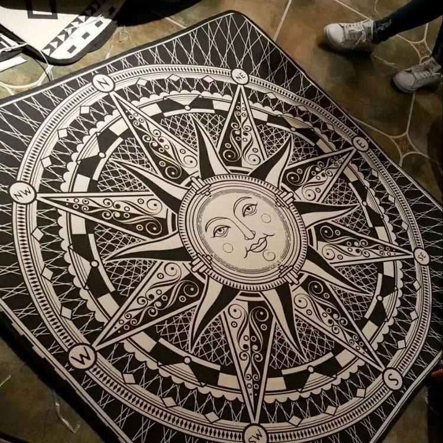

明月与红日：为什么太阳不能成为常见的文学意象？
近来在搜寻资料的时候，无意间发现一个很有意思的现象：无论是古今，还是中外，文学作品（或者说艺术作品）中明月是出席最频繁的“主角”了。相比之下我们的红日先生就显得有些尴尬，你几乎很少看到单独地、直接地表现太阳的作品。
“床前明月光，疑是地上霜”，这句唐诗是无数中国人小时候会诵的第一句诗；嫦娥奔月、玉兔捣药、吴刚伐桂、牛郎织女等等传说是多少年幼孩童向往的中国神话；《荷塘月色》《二泉映月》《月亮与六便士》等等文艺作品又何尝不是人们心中的美景。这些东西，无不例外与明月有关。而我们的太阳先生，在我的印象中除了希腊神话中与光明神阿波罗合体的太阳神赫利俄斯和中国神话中众人一体的太阳神帝俊、神农氏和羲和等人，就再无特别的文学意义上的相关物了。
太阳作为自然界的能量之源，按道理他的地位应当是相当高的。是日出让大地重焕光明，是日照让气象获得温度，是日辉让万物充满生机。离开太阳，我们美丽的蓝色星球将迅速冷却，成为一颗毫无奇迹可言的冰星。而我们的明月女士，更像是躲在太阳先生身后的贵族大小姐。她在太阳先生回府休整的时候偷偷溜出来玩耍。她的温柔光辉来自太阳的恩赐，因而有时这份光辉总是会缺一块少一片。但她播撒的光辉对于地球上靠光合作用生活的贪婪家伙们来说远远不够。
尽管很多方面比不上太阳先生，然而明月女士依然赢得了她在文学上的崇高地位。
明月播撒的光辉是纯白的。在人们心中，这份纯白的光辉是纯正无比的，是世间智者圣人所追求的那份最纯正的真理的颜色。因而这份光辉是淡薄的，是空寂的，是脱俗的。
明月播撒的光辉是洁净的。月色不掺有一丝杂色，犹如游子心中久离不回的家乡一样。在那里，有最淳朴的民风，有最温暖的朋友，有最爱的家人。因而这份光辉是母性的，是爱情的，是思乡的。
明月播撒的光辉是温柔的。月光本身没有可以感知的温度，但当迁客骚人远望她时，内心的孤独寂寞难掩。内心的温度与月光混合，一时竟不知道到底是内心的寒冷还是月光的寒冷。温柔的月光映衬着浩瀚的星空，徒增了迁客骚人的孤寂之感，谁能不因此潸然泪下？
大文学家苏东坡在千古名篇《赤壁赋》中，面对友人“寄蜉蝣于天地，渺沧海之一粟”的感叹和“哀吾生之须臾，羡长江之无穷”的忧伤，他缓缓道出：
“客亦知夫水与月乎？逝者如斯，而未尝往也；盈虚者如彼，而卒莫消长也。盖将自其变者而观之，则天地曾不能以一瞬；自其不变者而观之，则物与我皆无尽也，而又何羡乎!且夫天地之间，物各有主,苟非吾之所有，虽一毫而莫取。惟江上之清风，与山间之明月，耳得之而为声，目遇之而成色，取之无禁，用之不竭，是造物者之无尽藏也，而吾与子之所共适。”
苏子一席话点醒梦中人。明月无尽，仍有盈虚。吾等有限，亦可享无尽之乐。明月何如？
明月作为高洁、思乡、思人和存世之理的象征，成为了中国古典文学“风花雪月”四大意象之一。不仅在中国，在欧洲文学中明月也有着相似的重要地位。在现代，虽然人们忙于夜生活，欣赏明月的机会逐渐减少，但明月带给我们的感触依旧不减。对于我这种老二次元人来说，陪伴了绫和丛雨丸近千年的是纯白的满月，守护着栞那和众多死神度过悠久岁月的也是纯洁的明月（以上内容分别出自日本美少女公司Yuzusoft发售的游戏《千恋*万花》和《星光咖啡馆与死神之蝶》）。明月作为永恒和孤独的象征，极大地契合着现代人疲惫的心理状态。

明月依靠着她的纯白温柔与盈虚变化，赢得了人们的喜爱。而我们的太阳先生则在人们眼中树立起了牢不可破的至尊形象。
太阳是万物的主宰，没有太阳人们无法进行正常的生产生活。因而在世界各地的早期文明中，最初的统治者常常伴以太阳的形象出现：古埃及法老王、中国上古时代的帝俊、神农氏和羲和、古日本天皇始祖天照大神等等。阳光的刺眼和强烈的热量让人难以靠近，同样赋予了太阳“神圣不可侵犯”的意象。而阳光的颜色中带有金黄色，与黄金这种贵重金属的颜色很相似，因此这也为太阳的至尊形象添上了一笔。
太阳先生就这样成为了权利、法律和权威的代言人。

不过这样的代言人也不是绝对“无敌”的。每当“天狗食日”时，太阳那绝对的光辉将黯然消逝。人们恐惧着原则和权威的消失，纷纷敲锣打鼓，企图赶走“天狗”这个邪神。这也能反映出太阳尽管在人们心目中的形象算不上特别人性化，但也占有相当的地位。
鲁迅先生在《拿来主义》一文中写道：“然而尼采究竟不是太阳，他发了疯。”在尼采本来的观点中，他自己的思想不被世人理解，自己的智慧得不到他人的思想，所以“我是太阳，不知道索取，只知道给予”。鲁迅先生简单引用尼采的故事，虽然是为“拿来主义”的总观点服务，但我认为鲁迅先生在这里有弦外之音。太阳代表着绝对和权威的奉献，尼采靠着唯心论企图用所谓的“强力意志”和“超人”来将自己的意识强加于人，事不成反而发了疯。这与太阳的形象背道而驰，何胆敢自诩为太阳？
不过太阳作为“绝对”的代名词由来已久，早已深入人心。但随着时代的发展，一些全新的艺术领域被开垦出来。末世题材就是其中热门的一个。在末世主题的艺术作品中，常常可以看到这样的故事：人类的所作所为不仅伤害了万物，更伤害了自己。在核冬天的烟尘之下，地面笼罩着黑暗，不见一缕阳光。人们鼓起勇气离开即将枯竭的地下庇护所重回地面试图重建家园，经过九九八十一难后，主角一行人终于看到了核冬天结束后的第一缕阳光。这缕阳光就是希望。在这类作品中，人们长期面临着黑暗带来的恐惧，阳光就成为了希望的代名词。
也许我们本来就不应该去纠结明月和红日在文学当中的地位如何，毕竟他们的存在本就有着他们自己的意义，无论“人存定理”是否生效。但是文学，或者说是艺术，本来就是人类在认识世界的过程中产生的。我们所赋予的意义，何尝不是丰富了他们的内涵呢？